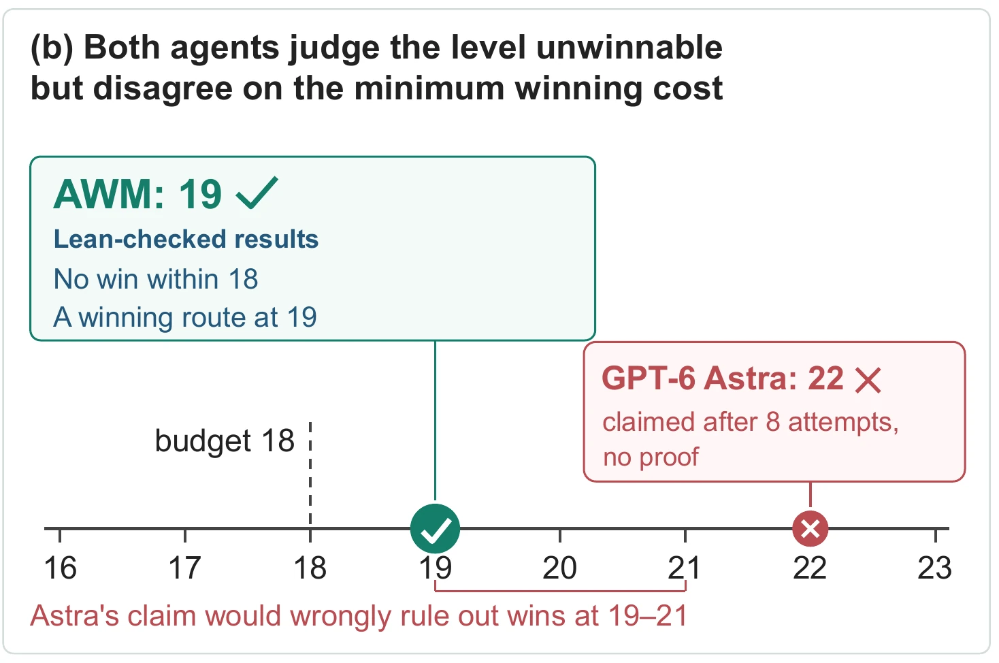
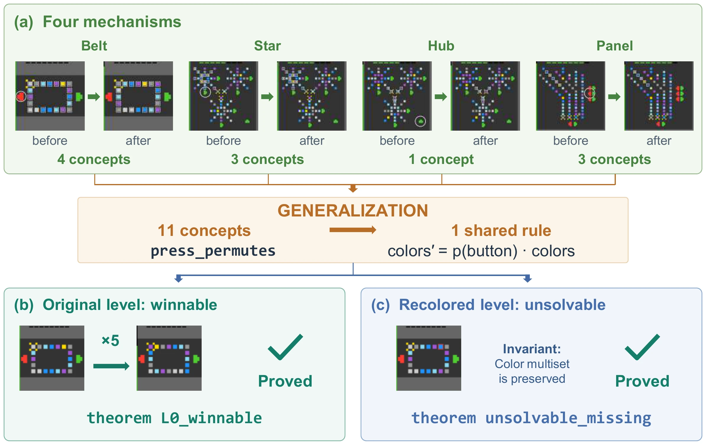

It knows when a task is impossible
On levels sealed one step short of a win, AWM proves in Lean that no route can win; frontier agents without it can only guess.


AWM learns a mathematical model of an unknown game from play, and proves in Lean what can and cannot be won.
On levels sealed one step short of a win, AWM proves in Lean that no route can win; frontier agents without it can only guess.

Every game becomes a handful of typed objects and named rules, and Lean replays every winning run against them.


AWM explores the game and writes each guess about its rules as an executable Python hypothesis, tested and revised against every observed transition.
It structures the hypotheses into typed objects and shared rules, and simplifies them with transformations inspired by category theory.
It encodes the model in Lean 4 and proves, with kernel-checked theorems, which levels can and cannot be won.